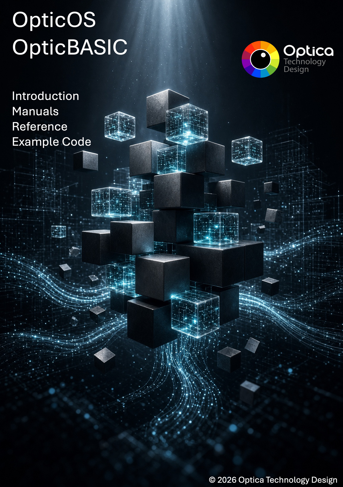
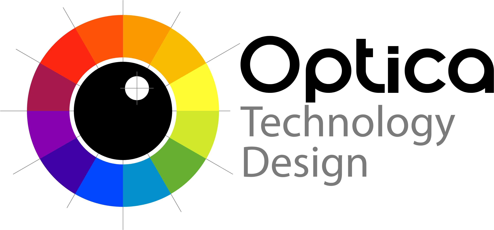
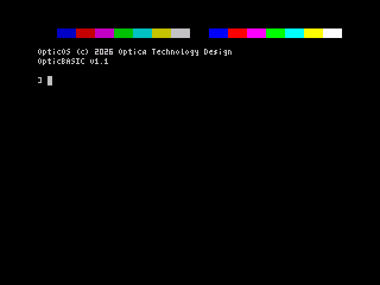

OpticOS and OpticBASIC © 2026 Optica Technology Design. ZX Spectrum is a trademark of its owners; OpticOS is not connected with Sinclair Research or Amstrad. Screenshots are from the Fuse emulator.